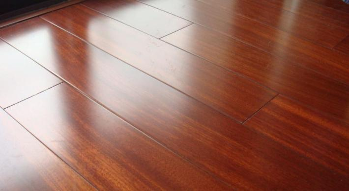

铺木地板还是铺瓷砖?
客厅里是铺木地板好还是瓷砖好，很多客户担心不好打理，只选择铺卧室，而客厅选择瓷砖，客厅到底该装木地板还是地砖？这个问题有太多讲究，要根据问题综合分析。
客厅朝向是否明亮?
如果您家客厅是朝北或是暗厅，那还是铺木地板吧。原因很简单，本来就光照少，再铺上冰冷的瓷砖，那室内还不冷嗖嗖凉森森的。夏天还好点，咱当冷气室了，春秋和冬季呢？
如果客厅面积不大，光线一般甚至是暗淡，建议使用浅色系木地板，选用浅色显得客厅不会产生很明显的分区，不会在视野上使空间变得狭小，反之，可以让客厅显得空间更大。
家庭人员组成如何?
如果有老人或孩子，客厅还是铺木地板吧。瓷砖可比木地板硬多了，孩子和老人可都是宝，万一摔个好歹出来可就后悔一辈子啊！
木地板软硬适中，感觉舒适。如果家中有老人和小孩，用木地板更安全一些，摔倒了伤害也更小。家里有可爱的小朋友，或者有年老长者，或许有风湿的人群以及腿脚不便利的人，最好采用木地板，减少腿部因为不适而带来的痛苦，减少病痛折磨。木材所拥有的弹性能够保障他们的安全，木材所散发出的一些芬多精等天然物质，则对人体非常有益。
家庭风格是怎样的?
使用木地板感觉更温馨、家的氛围更浓，瓷砖则让人想到商场。如果你的家是属于中式或日式，则建议使用实木地板，至于颜色，可根据面积、采光度、家私色泽度来整体性来考虑；如果你家是现代、田园、欧式的、可以考虑采用橡木地板等，至于花色纹理酌情考虑分配。
多久后二次装修?
一般而言，二次装修期是5—8年，如果您视觉疲劳了想要更换地面材料，木地板更换相对容易，瓷砖则十分困难，几乎大兴土木。如果搬家的时候，您想带走木地板装到新家很容易；地砖就只能选择送给下家了。
有人说瓷砖使用年限长，可以用10—20年。但是等到你要重新装修时，是肯定不会留着旧瓷砖的。瓷砖比木地板难拆，木地板拆了可以回收或二次使用，瓷砖砸了你还要花钱找人运走。
生活的习惯如何?
习惯光脚在地面上走的，那还是铺木地板吧。不仅仅是因为脚底凉会带来各种疾病，且木地板的脚感也很舒适。如果家里人不喜欢穿拖鞋，为了呵护双脚，则考虑使用木地板，这样能让双脚接触木地板的质感比较舒适，冬天也不冷。坐着地板上看电视，更是一种享受。
总之，现在家装，不但要考虑风格美观，更要考虑舒适程度。家是我们长期居住的地方，是我们在外辛勤劳作后休息的地方，所以更要感觉舒适才行！